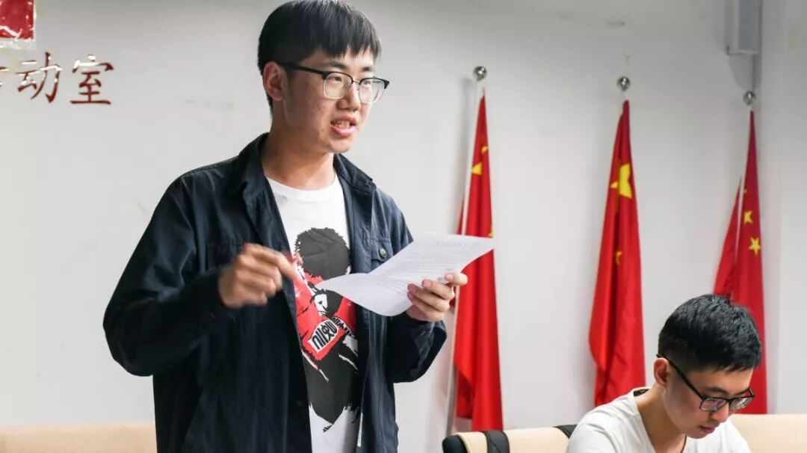

【行者无疆·源洄渝州】 见面会，行者新的开始
苦等良久的行者无疆实践团
迎来了一群可爱的人
和一场如约而至的见面会
经过老行者们深思熟虑，仔细斟酌之后，行者无疆迎来了13位新成员。他们来自不同的地方、不同的专业；他们性格各异，有着不同的兴趣爱好；但他们因怀揣着对文化的热爱相聚在一起，决定为了一个共同的心愿奔向远方。

经过简单的自我介绍后，队员们彼此间有了初步的了解。虽是初识，这群可爱的人已经像老朋友一般，大家一起畅谈兴趣爱好，讨论接下来的行程，诉说各自的期待。他们聊着学习生活，聊着面试时的感受，聊着之前的旅途，话语中满是希望与期待，见面会现场也被温暖与欢乐的气氛包围着。
本次带队队长沈柏宇首先介绍了团队的创立初衷和发展以及本次调研活动的主题，简述了本次实践的前期工作安排，接着又由各个组长进行岗位任务陈述。通过他们的介绍，新行者们了解到了各自的工作以及团队的整体运行方式，也为接下来的工作做好了准备。
为了让大家更快地熟悉队友，介绍环节结束后队长还带领行者们进行了“破冰活动”，大家的欢声笑语破除了人与人间的冰墙，拉近了心与心的距离。
行者无疆不仅仅是一个团队，更是一个温暖的家。与另一位队友的约定、学姐学长们的寄语、来自实践团的信，都让大家庆幸这次的相遇。无论前路是坎坷曲折，抑或平坦顺意，行者自有锦囊相伴。
生命的意义不在于奔赴某一目的地，而在于承担每个过程。行者19人集结完毕，下一段文化之旅即将开启……

来源丨行者无疆实践团
文字丨黄玲
排版丨邓子孚
审核丨邓子孚 沈柏宇
行者无疆实践团
QQ：2758025831

随行者一起认识世界
长按二维码关注